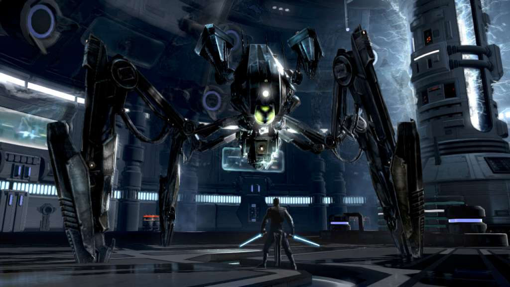

Lego Star Wars Series
Лего игры всегда имели свой фирменный стиль, который отлично вписался в Звездные войны. Игры по этим фильмам прекрасно следуют основному сюжету, а также остаются интересными и чертовски забавными. Несмотря на то, что они нацелены на детей, они заходят даже взрослым. Важно, что с выхода самой первой игры, еще не вышло ни одной провальной части.
Star Wars The Force Unleashed
Это одна из самых последних игр, которую делала студия LucasArts перед тем как ее купили, и начали проводить сеансы некромантии с ее интеллектуальной собственностью. В отличие от других игр она не является каноничной, но при этом ее сюжет намного круче, чем во многих других играх по этой франшизе. Можно сказать, что это альтернативная история, которая создавалась со слов «а что если бы». В игре у Дарта Вейдера был тайный ученик темный джедай Стар Киллер, чья история действительно была очень крутой.
В игре отличная боевая система, физика, механика темной силы, а еще в ней можно было надрать зад Дарту Вейдеру. Если вы не играли в этот экшен, то советуем обязательно попробовать.